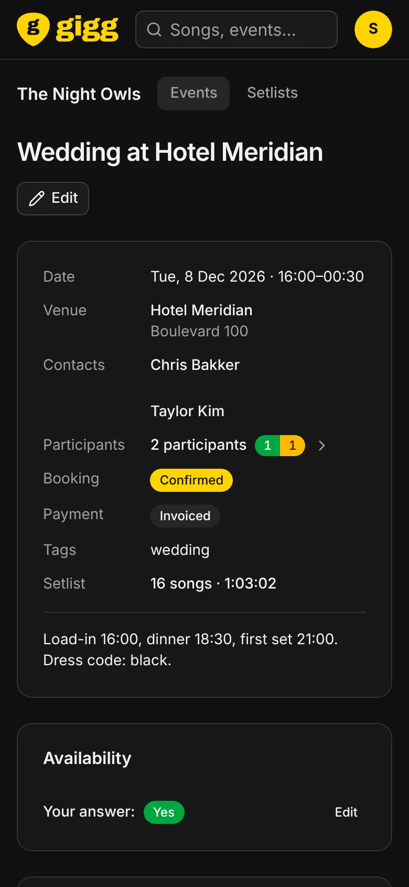

Pencil it in
Add the gig with its date, venue and contacts. Type a new venue and it's created on the spot. Track the booking from lead to option to confirmed, and the money from open to invoiced to paid.
- Lead → Option → Confirmed
- Fee as free text
- Contracts & riders as files
